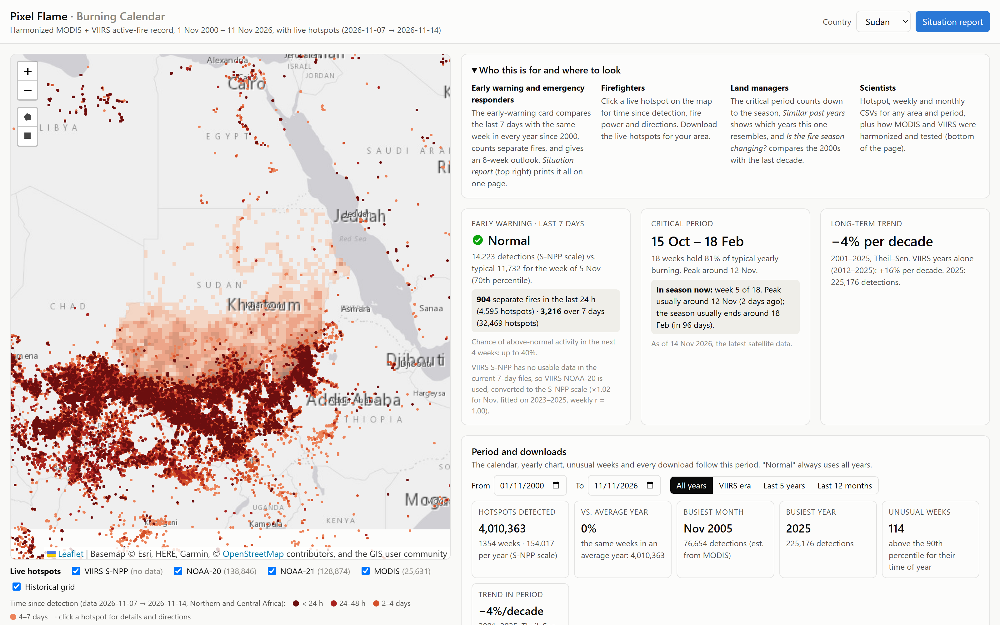
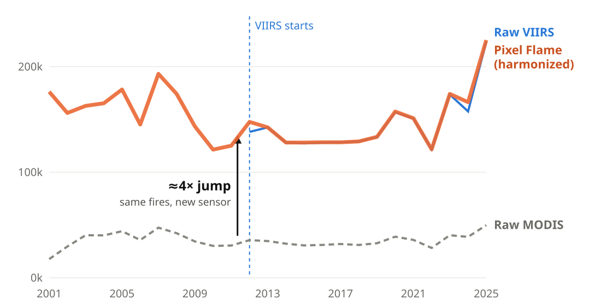
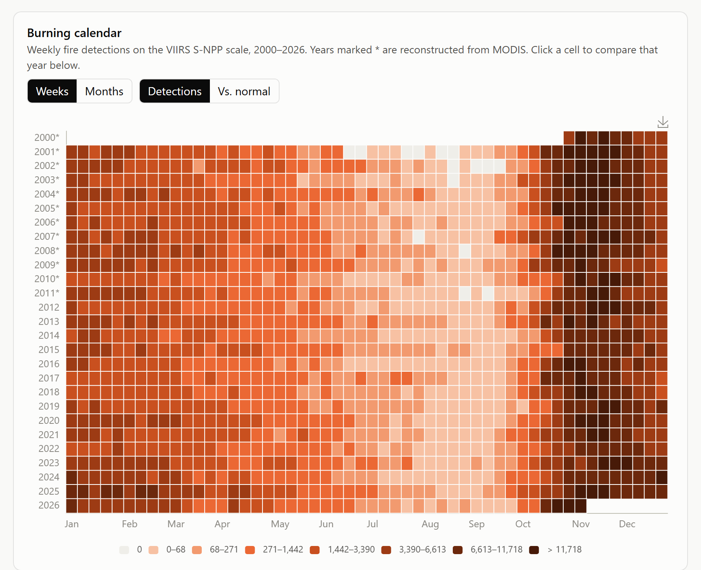
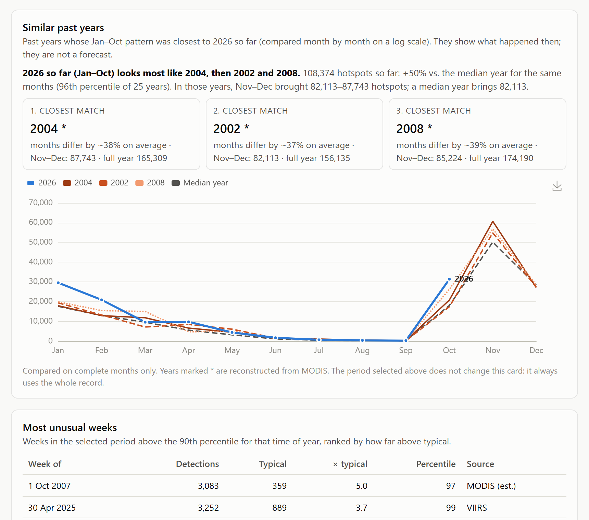
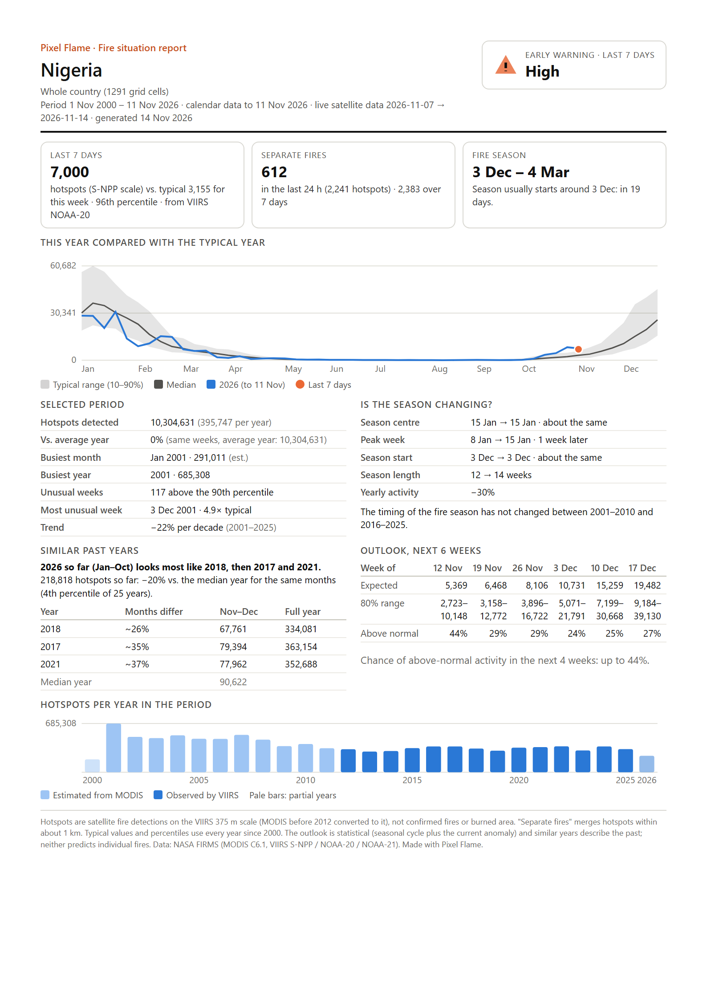

Vegetation fires only, confident detections, gas flares and industry masked.
69 days when S-NPP was down are filled from NOAA-20 or MODIS.
0.25° cells × 52 weeks, from Nov 2000 to last week.
Month-specific ratios on sensor overlaps: Terra → Terra+Aqua → VIIRS; NOAA-20 → S-NPP.
Predict years the model never saw, then compare with real VIIRS.

HIGH Nigeria today: 7,000 hotspots this week vs. 3,155 typical (96th percentile), 19 days before its usual season.
NORMAL Sudan: 904 separate fires in the last 24 h; in season, week 5 of 18.
Similar past years: Sudan's 2026 so far looks most like 2004.
Season shift: Sudan's season now comes 1.1 weeks later than in 2001–2010.
Plus an 8-week outlook with uncertainty ranges tested on the area's own past.


Runs in any web browser: nothing to install, free to host.